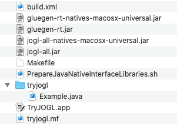

今回は、最初のバージョン（Version 0）ということで、これからのプログラミング（バージョンを追いながら作ってゆくため）の準備を行いましょう。
まず、元（基：ベース）となるものを入手してください。macOSのターミナルを開き、リポジトリからチェックアウトするのが簡便です。
$ mkdir ~/AP/Java/TryJOGL/ $ cd ~/AP/Java/TryJOGL/ $ svn checkout --username student http://bluetree.kyoto-su.ac.jp/repositories/AP/Java/TryJOGL/TryJOGL_Programming_Process/ A TryJOGL_Programming_Process/TryJOGL.app A TryJOGL_Programming_Process/TryJOGL.app/Contents A TryJOGL_Programming_Process/TryJOGL.app/Contents/MacOS A TryJOGL_Programming_Process/TryJOGL.app/Contents/Resources A TryJOGL_Programming_Process/TryJOGL.app/Contents/Resources/Scripts A TryJOGL_Programming_Process/TryJOGL.app/Contents/Resources/description.rtfd A TryJOGL_Programming_Process/tryjogl A TryJOGL_Programming_Process/Makefile A TryJOGL_Programming_Process/build.xml A TryJOGL_Programming_Process/PrepareJavaNativeInterfaceLibraries.sh A TryJOGL_Programming_Process/TryJOGL.app/Contents/Info.plist A TryJOGL_Programming_Process/TryJOGL.app/Contents/MacOS/applet A TryJOGL_Programming_Process/TryJOGL.app/Contents/PkgInfo A TryJOGL_Programming_Process/TryJOGL.app/Contents/Resources/JavaApp.icns A TryJOGL_Programming_Process/TryJOGL.app/Contents/Resources/Scripts/main.scpt A TryJOGL_Programming_Process/TryJOGL.app/Contents/Resources/applet.icns A TryJOGL_Programming_Process/TryJOGL.app/Contents/Resources/applet.rsrc A TryJOGL_Programming_Process/TryJOGL.app/Contents/Resources/description.rtfd/TXT.rtf A TryJOGL_Programming_Process/gluegen-rt-natives-macosx-universal.jar A TryJOGL_Programming_Process/gluegen-rt.jar A TryJOGL_Programming_Process/jogl-all-natives-macosx-universal.jar A TryJOGL_Programming_Process/jogl-all.jar A TryJOGL_Programming_Process/tryjogl/Example.java A TryJOGL_Programming_Process/tryjogl.mf Checked out revision 2671. $ open TryJOGL_Programming_Process

$ tree
./ (~/AP/Java/TryJOGL/TryJOGL_Programming_Process/)
|-- Makefile
|-- PrepareJavaNativeInterfaceLibraries.sh
|-- TryJOGL.app/
|-- |-- Contents/
|-- |-- |-- Info.plist
|-- |-- |-- MacOS/
|-- |-- |-- |-- applet
|-- |-- |-- PkgInfo
|-- |-- |-- Resources/
|-- |-- |-- |-- JavaApp.icns
|-- |-- |-- |-- Scripts/
|-- |-- |-- |-- |-- main.scpt
|-- |-- |-- |-- applet.icns
|-- |-- |-- |-- applet.rsrc
|-- |-- |-- |-- description.rtfd/
|-- |-- |-- |-- |-- TXT.rtf
|-- build.xml
|-- gluegen-rt-natives-macosx-universal.jar
|-- gluegen-rt.jar
|-- jogl-all-natives-macosx-universal.jar
|-- jogl-all.jar
|-- tryjogl.mf
|-- tryjogl/
|-- |-- Example.java
$
展開して得られたファイル群の若干の説明をします。まず、「build.xml」と「Makefile」がJavaプログラムをビルドするためのxmlファイルとメイクファイルです。
次に、4つのJARファイル「gluegen-rt-natives-macosx-universal.jar」「gluegen-rt.jar」「jogl-all-natives-macosx-universal.jar」「jogl-all.jar」があります。これらがJavaプログラミングで3次元グラフィックスを行う際に、最低限必要なJOGL（Java OpenGL：Java Binding for the OpenGL API）になります。以下にJOGLに関する簡単な備忘録（稚拙なメモランダムですけれども）を載せて（恥ずかしさも省みず引用して）おきます。
【メモ】 JOGLの最新のバージョンは、以下のjogampのサイトからダウンロードできる。 http://jogamp.org/ JOGLのライセンスはBSDライセンスのオープンソースである。 新旧すべてのバージョンのプログラム（ソースコード）が、 デプロイメントとして公開されている。 http://jogamp.org/deployment/ デプロイメント（配備｜活用｜運用） |-- リリース（頒布） |-- |-- インストール（設置） |-- |-- |-- アクティベート（有効化） |-- |-- |-- ディアクティベート（無効化） |-- |-- アンインストール（抹消） |-- アップデート（更新） |-- サポート中止（終了） 頒布版では「gluegen_921-joal_647-jogl_1485-jocl_1128/」が最新（2019年12月31日現在）である https://jogamp.org/deployment/archive/master/ 上記のサイトから「gluegen_921-joal_647-jogl_1485-jocl_1128/archive/」の中をブラウズする。 そして、以下のアーカイブ（7zファイル）をダウンロードする。 jogamp-all-platforms.7z 開発版では「gluegen-b927-927/」と「jogl-b1489-1488/」が最新（2020年01月02日現在）である。 https://jogamp.org/deployment/autobuilds/master/ 上記のサイトから「gluegen-b927-927/」と「jogl-b1488-1488/」のそれぞれの中をブラウズする。 そして、以下のアーカイブ（7zファイル）をダウンロードする。 gluegen-2.4-b927-20200102-macosx-universal.7z jogl-2.4-b1488-20200102-macosx-universal.7z セットアップ法などは、以下のページに丁寧に説明されている。 https://jogamp.org/gluegen/www/ https://jogamp.org/jogl/www/ それらを要約すると、以下のJARファイル群が関係していることがわかる。 １）gluegen-rt-natives-macosx-universal.jar ２）gluegen-rt.jar ３）jogl-all-natives-macosx-universal.jar ４）jogl-all.jar これらは、上述のアーカイブ（7zファイル）を展開して得られる「jar」ディレクトリの中に収録されている。 ネイティブなJARファイルを選ぶ際には、必ず使用環境のOSのものにすること。 上記の4つのJARファイルを利用する際、 まず、２）と４）にclasspathを通す必要がある。 そして、１）と３）を実行環境下に展開しなければならない。 注意としては、 JOGL v2.2.xにおいて「javax.media.opengl.*」をインポートしていたところを、 JOGL v2.3.x以降では「com.jogamp.opengl.*」にインポート先を変更しなければならない。 Oracle（オラクル）のバイナリコードライセンス（BCL：Oracle Binary Code License）にそぐわなくなったからであろう。 そのため、パッケージというか、名前空間が、Java拡張という位置付けからサードパーティ製へと格落ちした次第と思われる。 以下は蛇足であるが…、 上述の4つのJARファイルを、MVCデザインパターンと一緒に、内包した2つのJARファイルを用意しておいた。 ５）mvc4jogl-natives-macosx-universal.jar ６）mvc4jogl.jar これら「MVC4JOGL」を用いると、１）から４）までの4つのJARファイルは一切不要となる。 利用時には、まず、６）にclasspathを通す必要がある。 そして、５）を実行環境下に適切に展開するために、以下のシェルスクリプトファイルも用意しておいた。 ７）PrepareJavaNativeInterfaceLibraries.sh このシェルスクリプトは、ビルド（makeやantを使用）する時に、適切に起動されるようになっている。 追々に利用することになるであろう。 さらに蛇足となるが…、 macOS 10.15.x Catalinaおよび10.14.x Mojaveにおいて、正式リリース版であるJOGL v2.2.xもJOGL v2.3.xも動作しない。 これらのバージョンは、macOS 10.13.x High Sierraや10.12.x Sierraでは（そして、それ以前のmacOSでも）動作していた。 おそらくMojaveから標準となったMetal（メタル by Apple：アップル製）が関係していると思われる。 JOGL v2.4.xが開発中であり、Vulkan（ヴァルカン by Khronos Group：クロノスグループ製）対応がうたわれている。 さぞや対応が難しかろう、Direct 3D（ダイレクト3D by Microsoft：マイクロソフト製）との関係もあるので。 macOSのCatalinaやMojaveで、警告（warning）が出るものの、かろうじて動作するバージョンは、 頒布版の「gluegen_916-joal_642-jogl_1483-jocl_1122/archive/（2019年04月10日）」と 開発版の「gluegen-b916-916/（2019年04月10日）」と「jogl-b1483-1483/（2019年04月10日）」である。 これら以降のビルドであれば、なんとか動作する、警告（warning）も出ずに。 しかし、シェーディングとライティングに問題（不具合）があるようで、いまだ正常なレンダリングができない。 今後のビルドに貢献（協力）しながら（見守って）ゆくしかなかろう、ふぅ〜。 ふぅ〜と息をついていたら、なんと！次のビルドが出ているではないかぁーぃ。 「gluegen-b928-928/」 「jogl-b1489-1489/」 年始だというのに働いて（稼いで）くれているなぁ〜。 バグ報告とパッチ寄贈をする甲斐（効果・値打ち）もあるというものでしょう。 --- 靑木惇（2020年01月02日22時20分）
そして、「PrepareJavaNativeInterfaceLibraries.sh」はシェルスクリプトファイルです。macOSのためのネイティブなjarファイル2つ（gluegen-rt-natives-macosx-universal.jarとjogl-all-natives-macosx-universal.jar）を展開して、dylibファイル群を作り出します。dylibはJava Native Interface（JNI）のライブラリであり、C言語で作られているOpenGLプログラムをコンパイルして実際のCPU上で動作可能になっているコード（ネイティブコード）とJavaプログラムを連携させるためのものです。
さらに、「tryjogl」のディレクトリがJavaのパッケージを表し、その中に「Example.java」というJavaのソースプログラムがあります。今後、この「Example.java」を編集する（いじってゆく）ことになります。「TryJOGL.app」がJavaプログラムをビルドしてアプリケーションに仕立て上げるためのものであり、「tryjogl.mf」がtryjoglパッケージをjarファイルにする際に使用するマニフェストファイルになります。
さぁ！それでは、「tryjogl」ディレクトリ（パッケージ）にある「Example.java」の中身を、以下のソースコードと同じになるように編集してください。編集するところをハイライトで表しておきます。Exampleクラスのインスタンスを生成して、Exampleのコンストラクタを動かすだけのプログラムになります。
package tryjogl;
/**
* JOGL（Java bindings for OpenGL）の例題プログラムである。
* OpenGLを使ったJavaによる三次元グラフィックスの初歩的な練習になる。
*/
public class Example extends Object
{
/**
* Exampleのコンストラクタである。
*/
public Example()
{
System.out.println("Example");
return;
}
/**
* 針金細工のティーポット（Wire Teapot）を描くOpenGLのウィンドウを開く。
* @param arguments コマンドの引数列（文字列の配列）
*/
public static void main(String[] arguments)
{
System.out.println("main");
new Example();
return;
}
}
では、makeからantを動かし、dylibの準備をし（prepare）、コンパイルして（compile）、jarファイルを作り（jar）、ここまでがビルド（all）、そして、実行して（test）みましょう。ちゃんと「main」「Example」と出力されます。
$ make test
env LC_ALL=ja_JP.UTF-8 ant test
Picked up _JAVA_OPTIONS: -Dfile.encoding=UTF-8
Buildfile: /Users/aoki/Developments/Languages/Java/TryJOGL/Version0/build.xml
prepare:
[mkdir] Created dir: /Users/aoki/Developments/Languages/Java/TryJOGL/Version0/Classes
[exec] Picked up _JAVA_OPTIONS: -Dfile.encoding=UTF-8
[exec] META-INF/MANIFEST.MFが展開されました
[exec] jogamp/nativetag/common/macosx/universal/TAG.classが展開されました
[exec] natives/macosx-universal/libgluegen-rt.dylibが展開されました
[exec] Picked up _JAVA_OPTIONS: -Dfile.encoding=UTF-8
[exec] META-INF/MANIFEST.MFが展開されました
[exec] jogamp/nativetag/opengl/macosx/universal/TAG.classが展開されました
[exec] natives/macosx-universal/libjogl_desktop.dylibが展開されました
[exec] natives/macosx-universal/libjogl_mobile.dylibが展開されました
[exec] natives/macosx-universal/libnativewindow_awt.dylibが展開されました
[exec] natives/macosx-universal/libnativewindow_macosx.dylibが展開されました
[exec] natives/macosx-universal/libnewt.dylibが展開されました
[exec] 2019年 12月19日 木曜日 13時00分48秒 JST
compile:
[javac] Compiling 1 source file to /Users/aoki/Developments/Languages/Java/TryJOGL/Version0/Classes
[javac] Picked up _JAVA_OPTIONS: -Dfile.encoding=UTF-8
[exec] 2019年 12月19日 木曜日 13時00分50秒 JST
jar:
[jar] Building jar: /Users/aoki/Developments/Languages/Java/TryJOGL/Version0/tryjogl.jar
[jar] Building jar: /Users/aoki/Developments/Languages/Java/TryJOGL/Version0/tryjogl-natives-macosx-universal.jar
[exec] 2019年 12月19日 木曜日 13時00分51秒 JST
all:
[exec] 2019年 12月19日 木曜日 13時00分51秒 JST
test:
[exec] Picked up _JAVA_OPTIONS: -Dfile.encoding=UTF-8
[exec] main
[exec] Example
[exec] 2019年 12月19日 木曜日 13時00分51秒 JST
BUILD SUCCESSFUL
Total time: 3 seconds
$